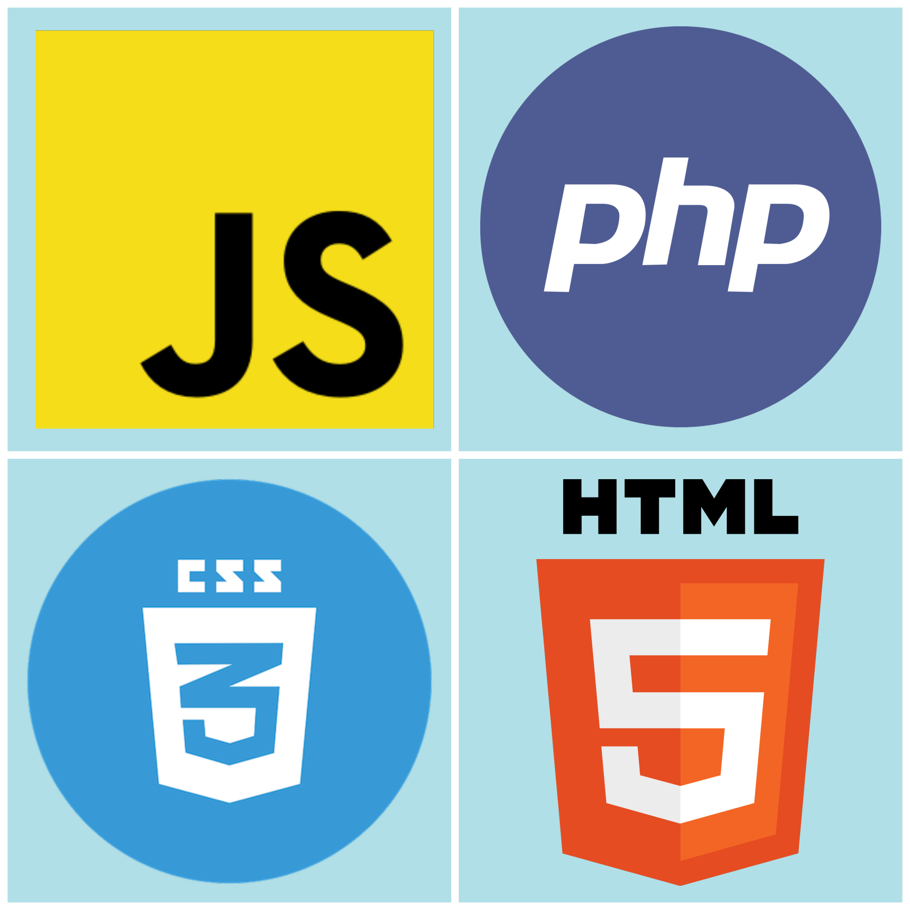
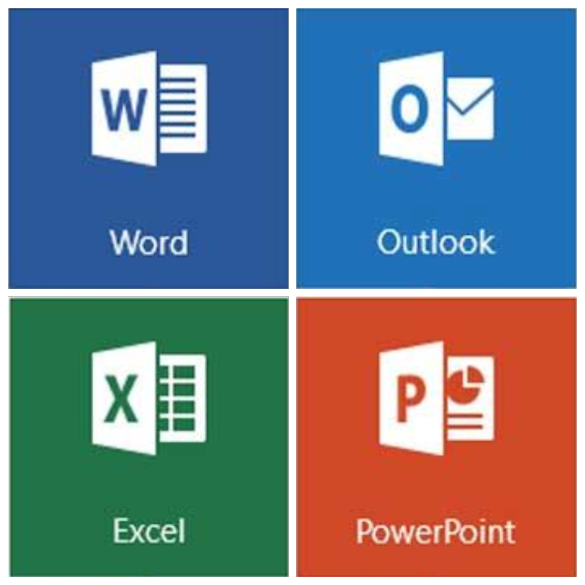

Hindi – Native/Bilingual
Proficiency (Spoken)
Punjabi –
Proficiency (Spoken)
Urdu –
Proficiency (Spoken)
More Info
Languages
Contact Me
07711554473
Email -
amritsingh_28@yahoo.co.uk
About Me
Hi
My name is Amrit Singh and welcome to my portfolio.
I am currently undertaking a four year BSc course in Computer Science.
I have always enjoyed computer science, and hence I am now pursuing a degree in it.
What I find even more exciting is that the reason that my course is four years long is because
in the third year, I have the oportunity to go study abroad. I am a young, smart and confident
individual with a lot of skills under my belt and always ready to add more.
I am very hard working and I am always ready to try my best.
Why Study Abroad
It is very exciting that I have the opportunity to go abroad for a year and study at another amazing university.
Personally, I would absolutely love it if I get in to Seoul National University for the year
(There is a lot of competition for these spots). The reason I would like to go to South Korea is simple actually...
I am really into their music, shows and food. Going there for a year would be a perfect opportunity to
experience their culture first hand and dive deeper into their culture. I am also currently trying to
learn Korean all on my own and I am slowly improving day by day.
Furthermore, this is a fantastic opportunity to make me more independent, push me out of my comfort
zone, try new things and meet new people.
My past in Computer Science
Computer science is a diverse industry to dive into. At a young age, I started making really long and complex animations in Scratch. I would always try to go above and beyond in what I am doing; whether it is by making a really long and complex animation in the software or attempting to make a game. These interests then lead me to apply for an online python course. This then sparked a passion for this subject that I never foresaw. By the time it came around to do my GCSE's, I was quite experienced at the subject and the programming side of the course was just another excuse for me to program. This passion for the subject drove me to do external courses outside of school. I applied for online courses in android studio using java and ethical hacking. I was really into app development and I ended up making a basic social networking app in my free time. This was a long and challenging task for me as building such an app is definitely not a one man job in the real world.However, in the end, the satisfaction of creeating one is really worth it.
Skills
 My Past and Current Experiences
My Past and Current ExperiencesI started to learn how to program in java in 2016. I started with an online course on a stite called Udemy. It was an Android Development course using Android Studio. This was my first exposure to Java and I had made a lot of simple apps from currency converters to a fairly basic social networking app.
My next exposure was at university where it was taught in great detail and a lot of my missunderstandings were cleared. I enjoyed the module so much that I had completed the course work in the second week and did fairly well in the end of modual exam. For the second semester, we still went over java but it was focused on the object orientated part of java. For the project I made a simple Mario-like game.
 My Past and Current Experience
My Past and Current ExperienceI had immersed myself into computer science at a very young age. My dad is a programmer and when the Rassbery Pi first came out, I had the opurtunity to use it and play around with it using Scratch and Python.
A few years later and I was using Python for my coursework for GCSE computer science for which I got an A. My experience didn't end here. I then managed to become an online tutor with MyTutor. I now have over 40 hours of experience on tutoring python to GCSE and A-Level students.

My Experience
As part of a module in my second semester of university. I was exposed to HTML, CSS, Java Script and PHP. I have used a combination of all of these elements in order to make this site and many others that I made for practice purposes. I have tried my best to make this portfolio as professional and clean as I can while trying to make it fulfil its purpose.
As part of a module in my second semester of university. I was exposed to HTML, CSS, Java Script and PHP. I have used a combination of all of these elements in order to make this site and many others that I made for practice purposes. I have tried my best to make this portfolio as professional and clean as I can while trying to make it fulfil its purpose.

My Experience
I have plenty of experience with Microsoft Office. I have done many reports in Microsoft Word ranging from 5 pages to 115. However, I have a lot more Experience in Excel as I have had to make reports on spending for others and myself from time to time. For my work experience, a large part of it was to organise a large amount of data into a spread sheet and make it presentable.
The most experience I have is with Power Point. I have done countless presentations in and outside of school. I really enjoy public speaking and this is one of my favourit ways of doing it. My presintations tend to be very professional and clear which is definitely something that other people seem to struggle in.
I have plenty of experience with Microsoft Office. I have done many reports in Microsoft Word ranging from 5 pages to 115. However, I have a lot more Experience in Excel as I have had to make reports on spending for others and myself from time to time. For my work experience, a large part of it was to organise a large amount of data into a spread sheet and make it presentable.
The most experience I have is with Power Point. I have done countless presentations in and outside of school. I really enjoy public speaking and this is one of my favourit ways of doing it. My presintations tend to be very professional and clear which is definitely something that other people seem to struggle in.
My Experience
Like a lot of other people, I have a fair bit of experience in Photoshop and Premeire Pro as I too wanted to start a YouTube channel. At first, I wanted to start a gaming channel. Therefore I have had a fair bit of experience in editing screenshots for thumbnails and editing together videos to put up. After a while, I then tried starting a "Theory" channel. This is where I would research the science behind some movie or game scene and make a video about it. I had done one on the physics of Wonder Womans Lasso. This video took me over two weeks to make and due to this experience, I soon stopped as it is a lot of work and it was very ambitious of me to start this channel during A-Levels. Although I stopped, I still have a fair bit of experience of putting together videos and editing pictures.
Like a lot of other people, I have a fair bit of experience in Photoshop and Premeire Pro as I too wanted to start a YouTube channel. At first, I wanted to start a gaming channel. Therefore I have had a fair bit of experience in editing screenshots for thumbnails and editing together videos to put up. After a while, I then tried starting a "Theory" channel. This is where I would research the science behind some movie or game scene and make a video about it. I had done one on the physics of Wonder Womans Lasso. This video took me over two weeks to make and due to this experience, I soon stopped as it is a lot of work and it was very ambitious of me to start this channel during A-Levels. Although I stopped, I still have a fair bit of experience of putting together videos and editing pictures.
Soft Skills
Why it is arguably my best quality
Growing up, I used to be a fairly shy child. This then drastically changed due to two reasons. The first reason was due to the fact that I started to learn how to do and perform magic. But the second and more important for this section is that I joined something called the ATC (Air Training Corps).
This is a youth military organisation which basically allows young people to do everything the Royal Air Force does. I acquired alot of skills during my service there and Leadership is definitely one of them. As you can probably imagine, this organisation really likes to push you out of your comfort zone.
Some Examples
Growing up, I used to be a fairly shy child. This then drastically changed due to two reasons. The first reason was due to the fact that I started to learn how to do and perform magic. But the second and more important for this section is that I joined something called the ATC (Air Training Corps).
This is a youth military organisation which basically allows young people to do everything the Royal Air Force does. I acquired alot of skills during my service there and Leadership is definitely one of them. As you can probably imagine, this organisation really likes to push you out of your comfort zone.
Some Examples
- One of the best examples of Leadership that I can think of occurred during a two week camp in Florida that I took part in. The worlds second largest airshow takes place there and we were given the task to marshal aircrafts. This is a perfect example as I we were required to work as a team and actively change between being team leaders and team players depending on the situation.
- Another set of events that jump out are the countless field craft exercises I took part in. These are fairly complex activities which would involve trying to make and cross a bridge with limited supplies or trying to guide a blind person through a maze. Being the team leader of one of these exercises is fairly hard as you have to be able to think on your toes and be able to work under pressure.
A lot of Mentoring Experience
As stated in the leadership tab, I was part of something called the ATC. There I also had pleanty of experience teaching new recruits that joined our squadron. The things that I taught ranged from drills to how to improve uniform. This was just the start to my mentoring experience. After this, I was then chosen by my high school to teach year 11's GCSE mathematics. This went pretty successfully and now I am an online tutor on a site called MyTutor and I have over 90 hours of teaching there.
As stated in the leadership tab, I was part of something called the ATC. There I also had pleanty of experience teaching new recruits that joined our squadron. The things that I taught ranged from drills to how to improve uniform. This was just the start to my mentoring experience. After this, I was then chosen by my high school to teach year 11's GCSE mathematics. This went pretty successfully and now I am an online tutor on a site called MyTutor and I have over 90 hours of teaching there.
Plenty of Experience
As mentioned in the leadership tab. I have plenty of experience of working in a team. Admittedly, I have been in many teams where I didn't particularly like the people I was with but I was able to put my feelings aside and get the task complete. That is a really valuable skill, which from my experience, a lot of people don't seem to have. On top of that, I have been in countless teams which were not sucsessfull in completing the goal that was set for us to do and I have definitely learned from those mistakes.
As mentioned in the leadership tab. I have plenty of experience of working in a team. Admittedly, I have been in many teams where I didn't particularly like the people I was with but I was able to put my feelings aside and get the task complete. That is a really valuable skill, which from my experience, a lot of people don't seem to have. On top of that, I have been in countless teams which were not sucsessfull in completing the goal that was set for us to do and I have definitely learned from those mistakes.
Magic!
By far, presenting is my favourite skill. I have done many live performances ranging from a small audience of 30/40 people in school to 500 in Florida. Admittedly, it is scary but the reward is far greater to me. I enjoy presenting and I have been doing it for a while now so I feel like I am fairly good at it. I always took any opportunity I got whether that be a small presentation in class to a close up magic session to a formal report that I would have to present.
By far, presenting is my favourite skill. I have done many live performances ranging from a small audience of 30/40 people in school to 500 in Florida. Admittedly, it is scary but the reward is far greater to me. I enjoy presenting and I have been doing it for a while now so I feel like I am fairly good at it. I always took any opportunity I got whether that be a small presentation in class to a close up magic session to a formal report that I would have to present.
My Experience
I have been in many teams and projects. In most of them, I naturally take the project manager/ leader role. I am able to work under pressure fairly well and this is probably why I get given this role or take it when given the option. I am able to make efficient plans before a task. During a task, I am also able to analyse the situation and adapt to the situation.
I have been in many teams and projects. In most of them, I naturally take the project manager/ leader role. I am able to work under pressure fairly well and this is probably why I get given this role or take it when given the option. I am able to make efficient plans before a task. During a task, I am also able to analyse the situation and adapt to the situation.
This is a list of other soft skills that I have. They don’t have their own section because
this would make the web page really long and hence I only made sections on the ones that I think are important.
- Resilience
- Communication
- Adaptability
- Problem-Solving
- Work Ethic
- Time Management
Achievements
- Raised money for charity - I have participated in many events in order to raise money for various charities like Children in need and Help For Heroes. I have also raised money for my squadron so that we can enjoy a brand new mini-Bus.
- Wing Marksman - during my time during the ATC I have had the opportunities to shoot at a few shooting competitions and earned the highest badge, I had earnt was the wing Marksman badge on the L98A1.
- Drill Team - I was able to represent my squadron on the drill team. To get onto the team, you needed a combination of immaculate uniform and sharp drill. This was for a competition which every squadron in the wing participates in.
- Young Writers - At a very young age, I was able to get a short story I wrote published in a book along with a few other students in the UK.
- Royal Institution - I have been a member of the Royal Institution. As a member, I had attended lectures and talks that they held. Most of the Lectures that I attended were about maths, physics and astrophysics.
Education
GCSE - 2011-2016, Greenford High School
A-Level - 2016-2018, Greenford High School Sixth Form
Uni - 2018-Present, Queen Mary's University of London
A-Levels
- A* - Maths
- A - Further Maths
- B - Physics
GCSE
A*- Maths, Graphics
A- Computer Science, ICT, Physics, Business and Economics
B- Biology, Chemistry, Statistics, English Lang.
C- Religious Studies, German, English Lit.
Other Qualifications
BTEC Level 2 Diploma- Aviation Studies
BTEC Level 2 Diploma- Teamwork and Personal Development
Workplace Experiences
2014 (2 Weeks)
This was a two week work experience I did when I was in year 10. I was given various tasks through out the two weeks, but I was primarily working with the IT department. The first task that was given to me was to fo to all the different departments and ask the staff their about their mail box permissions. I had to note down what permissions they had access to and what permissions they needed in order to work. I then had to organise this data in a spreadsheet and present it to the IT staff later on. I had exceeded expectations and completed the task much sooner than the staff thought it would take. I was then tasked to set up some new laptops that needed to be given out to employees. Along with this, I also had to setup some software on other PC's around the bulding.
This was a two week work experience I did when I was in year 10. I was given various tasks through out the two weeks, but I was primarily working with the IT department. The first task that was given to me was to fo to all the different departments and ask the staff their about their mail box permissions. I had to note down what permissions they had access to and what permissions they needed in order to work. I then had to organise this data in a spreadsheet and present it to the IT staff later on. I had exceeded expectations and completed the task much sooner than the staff thought it would take. I was then tasked to set up some new laptops that needed to be given out to employees. Along with this, I also had to setup some software on other PC's around the bulding.
2016 (6 Weeks)
During my summer hollidays of 2016, I was working for a company called SB Components. My role here
was to keep their websites updated with any new products they may come out with or by keeping existing
products up to date. My other role was to work with other employees in testing a sample of their existing
products and testing new products they were coming out with by writing Python code for it.
2018 - Present
Recently, I have had the oppurtunity to work as an online tutor. I have had the opportunity to teach GCSE maths, Computer Science and A-Level Computer Science. This is a really valuable experience as I am communicating with young individuals and I am, at times, trying to explain fairly complicated concepts. I believe that is is a really key skill to have and teaching a subject makes you better at it. This also dosn't really feel like work as I enjoy helping people.
Recently, I have had the oppurtunity to work as an online tutor. I have had the opportunity to teach GCSE maths, Computer Science and A-Level Computer Science. This is a really valuable experience as I am communicating with young individuals and I am, at times, trying to explain fairly complicated concepts. I believe that is is a really key skill to have and teaching a subject makes you better at it. This also dosn't really feel like work as I enjoy helping people.
2016 (6 Weeks)
In the summer holidays of this year, I also had a job at working at a local supermarket called Spar. This was a corner shop and involved me communicating with customers a lot which is a really valuble experience to have. The job also required me to deal with customer complaints and questions. Hence there was a lot of customer interaction. Other roles also included restocking the shelves and keeping the place clean by moping.
In the summer holidays of this year, I also had a job at working at a local supermarket called Spar. This was a corner shop and involved me communicating with customers a lot which is a really valuble experience to have. The job also required me to deal with customer complaints and questions. Hence there was a lot of customer interaction. Other roles also included restocking the shelves and keeping the place clean by moping.
Volunteer Experience
Magic Show
In high school, I got the oppurtunity to be part of a magic show that my school was holding for the charity "Children in Need". This is a charity that supports young children who are at a disadvantage. This show was for an audience of around 50 people and we helped raise over £120.
In high school, I got the oppurtunity to be part of a magic show that my school was holding for the charity "Children in Need". This is a charity that supports young children who are at a disadvantage. This show was for an audience of around 50 people and we helped raise over £120.
1 Week
This is by far one of the best experiences I have had. This was part of a two week camp I took to Florida with the ATC.
Sun 'N Fun is the world second biggest airshow and as cadets we were assigned various tasks around the air show to help out.
My group was mostly at the short stay aeroplane parking area and our job was to marshall aircraft, that were comming in to see the
airshow, and tell them where to park as a team while having to deal with pedestrians and other fighter and stunt aircraft that were
coming in and taking off for the air show.
Other tasks included the same job but at different parking locations, selling tickets at
the ticket counter and helping to escort various planes to other locations.
Being part of the ATC gave me the opportunity to raise money for this charity. This charity helps the families who have lost a loved one to war or has been affected by war. We raised money for this charity by selling poppies at the local super market.
We are unsure about how much money we raised as we were not allowed to count it, but we were able to easily fill up 8 to 9 containers, so a fair bit.
My ATC squadron is an other thing I helped raise money for. My squadron would organise us to go to various places like
music events, marathons and even a local super market where we would volunteer to help out and raise money for the squadron.
Unlike other charities I raised money for, I got to see the results of raising this money as it went towards new sports equipment,
new laptops and PC's for the squadron and even a mini-bus.
Other Experiences
I am currently the president of the magic society at my university.
I have been doing magic for over 5 years now and I have participated in may magic shows and done may street performances.
This is why I felt confident enough to start a magic society. In the society,
we hold magic tutorials so new people can come and learn tricks. We also hold magic shows from time to time to raise money for the society.
Completed Projects
For my first semester at university, I was tasked with making a game in Java. I had finished all the other required exercises
early so I had asked the professor if I can go all out with this game and he agreed as long as I can tick off every criteria point.
The reason that this game is text based is because we were first taught procedural programming rather that object orientated programming
straight away. Below there is a link to this java game that I created.
The game is heavily inspired by the PC game Jurassic World Evolution. This is a game where you genetically make dinosaurs and create a park for tourists to visit. My take on the game is much simpler where you buy dinosaurs and try to make a profit. Dinosaurs may break out and cause expenses that way. Furthermore, these dinosaurs would eventually die, so they can’t make you money forever.
Java Program Link
The game is heavily inspired by the PC game Jurassic World Evolution. This is a game where you genetically make dinosaurs and create a park for tourists to visit. My take on the game is much simpler where you buy dinosaurs and try to make a profit. Dinosaurs may break out and cause expenses that way. Furthermore, these dinosaurs would eventually die, so they can’t make you money forever.
Java Program Link
Like the first project I did. This one was in my second semester where we were learning object orientated programming.
This now allowed me to make a graphical user interface which meant that I can make my game a lot more attractive.
Below you will see a slide show of screenshots of my game.
The game is fairly simple when it comes to the gameplay side of it. The objective is to get to the end of the level by
killing monsters in a Mario style platformer game. Your character earns experience depending on the level that you complete
and hence has more health and does more damage. You can also choose from a wide range of characters with different stats.
In the second year of university, we had a module called "Software Engineering Project". For this, we where randomly put into groups of 5 or 6 and we got to choose a project to do from a listed selection.
In my group, I naturally took the leader position by delegating roles and assigning tasks to other members. Our end goal was to create a prototype for out application, the application was not supposed to be fully functional, however, my group was able to make a working prototype and put it on a server for others to use and test.
The application has three different users who can do the following:
Teacher- Create Exam, Mark Exam
Marker - Mark Exam
Student - Take Exam, Register for Exam, View Previous Results.
The idea was that teachers can create exams and set who would mark which questions. They can assign other Teachers or Markers who can mark them. Markers are people like demonstrators whos only purpose is to mark questions. Students can, therefore, register for exams, take exams, and view their results. (The system automatically marks any MC questions)
Git Hub Link
In my group, I naturally took the leader position by delegating roles and assigning tasks to other members. Our end goal was to create a prototype for out application, the application was not supposed to be fully functional, however, my group was able to make a working prototype and put it on a server for others to use and test.
The application has three different users who can do the following:
Teacher- Create Exam, Mark Exam
Marker - Mark Exam
Student - Take Exam, Register for Exam, View Previous Results.
The idea was that teachers can create exams and set who would mark which questions. They can assign other Teachers or Markers who can mark them. Markers are people like demonstrators whos only purpose is to mark questions. Students can, therefore, register for exams, take exams, and view their results. (The system automatically marks any MC questions)
Git Hub Link
Other Projects
Word Search Completer -
This program can solve any word search. In order to do so, you need a txt file with the word search. Without any spaces and with one line right after the other. You then run the program with the txt file in the same location as the program. You then enter the name of the file and (ie: "puzzle1.txt") and the program will then promt you to enter words to look for and return them in the wordsearch found.
Java Program Link
This program can solve any word search. In order to do so, you need a txt file with the word search. Without any spaces and with one line right after the other. You then run the program with the txt file in the same location as the program. You then enter the name of the file and (ie: "puzzle1.txt") and the program will then promt you to enter words to look for and return them in the wordsearch found.
Java Program Link
Matrix Calculator -
I wrote a program that is able to put almost any Matrix into echelon or reduced echelon form. I made this program to check over my work for my propability and matricies modual. the program shows every step of the process, hence it is easy to go through and check your work.
Problem- The major flaw with this program is that it dosnt work when the the answer will have fractions. This is due to doubles only being able to hold so much of a recuring decimal and hence not being able times properly.
Java Program Link
I wrote a program that is able to put almost any Matrix into echelon or reduced echelon form. I made this program to check over my work for my propability and matricies modual. the program shows every step of the process, hence it is easy to go through and check your work.
Problem- The major flaw with this program is that it dosnt work when the the answer will have fractions. This is due to doubles only being able to hold so much of a recuring decimal and hence not being able times properly.
Java Program Link
Qualifications
A-Level's - A*AB
GCSE's - 13 GCSE's A*-C
2 BTEC’s Level 2 Diplomas
Top 5 Skills
| Skills |
|---|
| Java |
| Python |
| HTML |
| CSS |
| Java Script |
Top 5 Soft Skills
| Soft Skills |
|---|
| Leadership |
| Mentoring/Coaching |
| Teamwork |
| Presenting |
| Project Management |
About Me
Course - BSc Computer Science (Yr 2)
Age - 19
Qualifications
A-Level's - A*AB
GCSE's - 13 GCSE's A*-C
2 BTEC’s Level 2 Diplomas
About Me
Course - BSc Computer Science (Yr 2)
Age - 19
Top 5 Skills
| Skills |
|---|
| Java |
| Python |
| HTML |
| CSS |
| Java Script |
Top 5 Soft Skills
| Soft Skills |
|---|
| Leadership |
| Mentoring/Coaching |
| Teamwork |
| Presenting |
| Project Management |
About Me
Course - BSc Computer Science (Yr 2)
Age - 19
Qualifications
A-Level's - A*AB
GCSE's - 13 GCSE's A*-C
2 BTEC’s Level 2 Diplomas
Top 5 Skills
| Skills |
|---|
| Java |
| Python |
| HTML |
| CSS |
| Java Script |
Top 5 Soft Skills
| Soft Skills |
|---|
| Leadership |
| Mentoring/Coaching |
| Teamwork |
| Presenting |
| Project Management |
About Me
Course - BSc Computer Science (Yr 2)
Age - 19
Qualifications
A-Level's - A*AB
GCSE's - 13 GCSE's A*-C
2 BTEC’s Level 2 Diplomas
Top 5 Skills
| Skills |
|---|
| Java |
| Python |
| HTML |
| CSS |
| Java Script |
Top 5 Soft Skills
| Soft Skills |
|---|
| Leadership |
| Mentoring/Coaching |
| Teamwork |
| Presenting |
| Project Management |